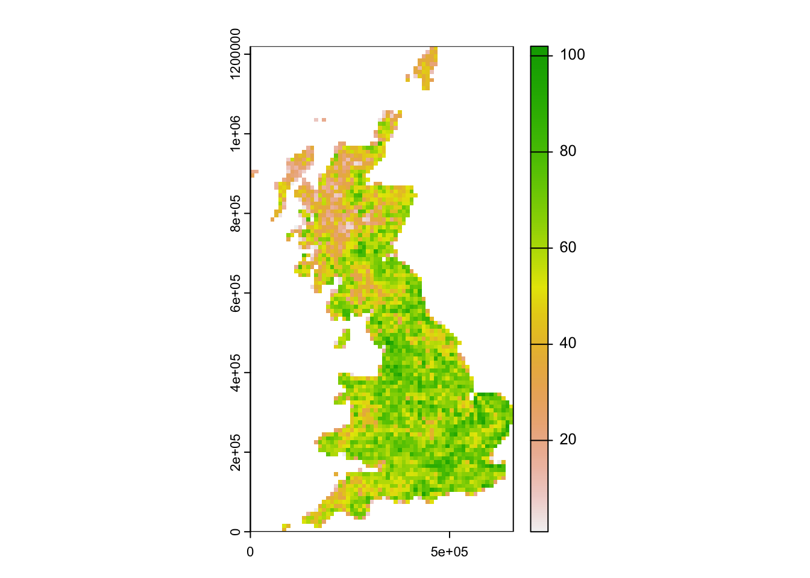
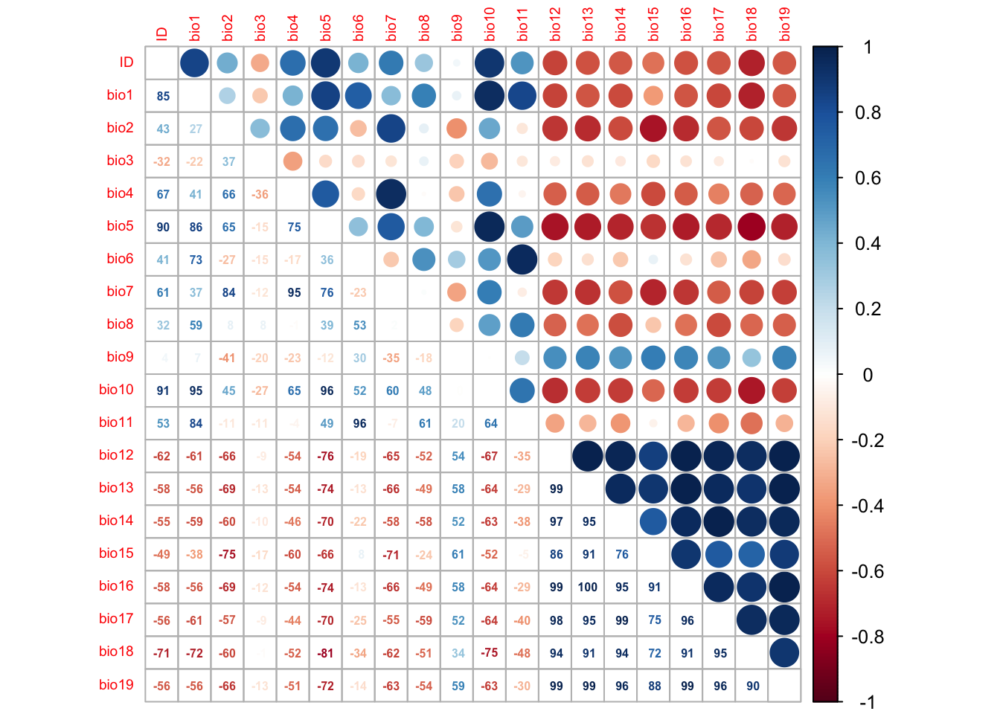
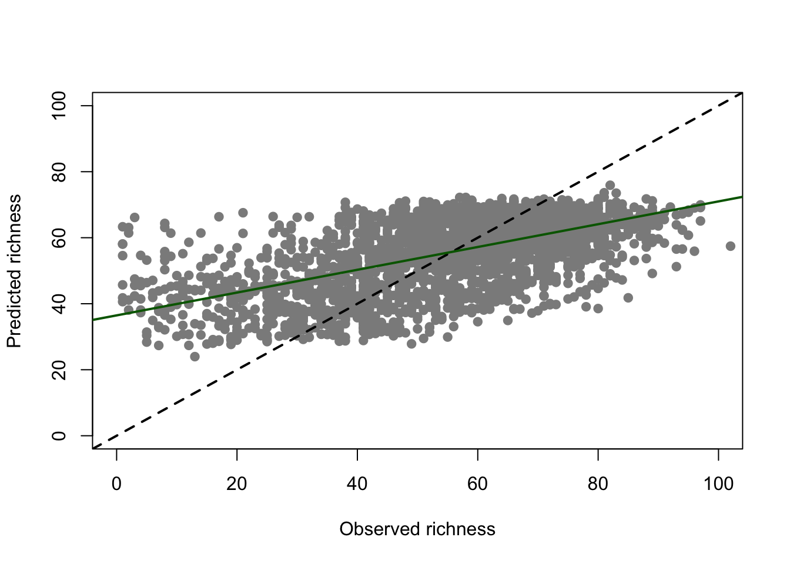
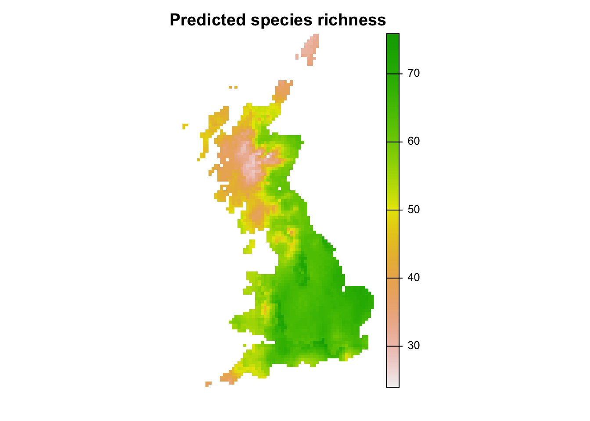

Species richness regression
RStudio project
Open the RStudio project that we created in the first session. I recommend to use this RStudio project for the entire course and within the RStudio project create separate R scripts for each session.
- Create a new empty R script by going to the tab “File”, select “New File” and then “R script”
- In the new R script, type
# Session a3: Species richness regressionand save the file in your folder “scripts” within your project folder, e.g. as “a3_RichnessRegression.R”
In the last session, we have explored the species richness gradients in UK breeding birds. We continue with these and now try to explain statistically which environmental variables are driving species richness.
1 Data on breeding bird richness
We will work with the dataset of British breeding and wintering birds from Gillings et al. (2019), more specifically with the bird records from Britain at 10 km resolution during the breeding seasons 2008-2011. The original data are available through the British Trust of Ornithology (www.bto.org; direct download here). In the last session, we have already calculated species richness and extracted bioclimatic variables from worldclim for all Britain.
We can load the data into R and inspect them.
# We load the R object from last session (using the function load()) and assign it to a new object name (using the function get())
UK_birdrichness_clim <- get(load('data/UK_bird_richness_clim.RData'))
# Inspect the data
summary(UK_birdrichness_clim)## EASTING NORTHING richness ID
## Min. : 5000 Min. : 5000 Min. : 1.00 Min. : 1
## 1st Qu.:255000 1st Qu.: 235000 1st Qu.: 44.00 1st Qu.: 709
## Median :345000 Median : 435000 Median : 58.00 Median :1417
## Mean :349494 Mean : 483881 Mean : 55.05 Mean :1417
## 3rd Qu.:435000 3rd Qu.: 725000 3rd Qu.: 68.00 3rd Qu.:2125
## Max. :655000 Max. :1215000 Max. :102.00 Max. :2833
##
## bio1 bio2 bio3 bio4
## Min. : 35.72 Min. :41.00 Min. :30.00 Min. :3060
## 1st Qu.: 76.90 1st Qu.:62.95 1st Qu.:34.00 1st Qu.:4224
## Median : 86.68 Median :69.15 Median :35.31 Median :4474
## Mean : 85.25 Mean :67.36 Mean :35.17 Mean :4397
## 3rd Qu.: 95.65 3rd Qu.:72.23 3rd Qu.:36.33 3rd Qu.:4684
## Max. :112.00 Max. :82.64 Max. :40.00 Max. :5322
## NA's :53 NA's :53 NA's :53 NA's :53
## bio5 bio6 bio7 bio8
## Min. :134.0 Min. :-55.48918 Min. :129.8 Min. :-12.40
## 1st Qu.:175.3 1st Qu.: -5.35973 1st Qu.:179.7 1st Qu.: 40.14
## Median :188.9 Median : 0.92337 Median :192.2 Median : 52.08
## Mean :188.8 Mean : -0.07503 Mean :188.9 Mean : 57.61
## 3rd Qu.:205.9 3rd Qu.: 7.38717 3rd Qu.:201.4 3rd Qu.: 68.72
## Max. :231.6 Max. : 43.00000 Max. :228.9 Max. :162.73
## NA's :53 NA's :53 NA's :53 NA's :53
## bio9 bio10 bio11 bio12
## Min. : 35.62 Min. :102.2 Min. :-23.40 Min. : 537.6
## 1st Qu.: 60.21 1st Qu.:131.8 1st Qu.: 25.80 1st Qu.: 702.6
## Median : 87.55 Median :144.3 Median : 33.46 Median : 902.6
## Mean : 87.15 Mean :143.1 Mean : 31.16 Mean : 984.3
## 3rd Qu.:104.36 3rd Qu.:156.0 3rd Qu.: 38.34 3rd Qu.:1184.3
## Max. :152.06 Max. :173.6 Max. : 70.00 Max. :2050.5
## NA's :53 NA's :53 NA's :53 NA's :53
## bio13 bio14 bio15 bio16
## Min. : 52.00 Min. : 31.00 Min. : 7.513 Min. :148.0
## 1st Qu.: 72.06 1st Qu.: 45.09 1st Qu.:14.217 1st Qu.:205.2
## Median : 98.05 Median : 54.50 Median :19.805 Median :284.1
## Mean :109.14 Mean : 57.20 Mean :19.630 Mean :313.3
## 3rd Qu.:136.27 3rd Qu.: 67.17 3rd Qu.:25.000 3rd Qu.:392.8
## Max. :258.60 Max. :104.93 Max. :32.000 Max. :711.8
## NA's :53 NA's :53 NA's :53 NA's :53
## bio17 bio18 bio19
## Min. :106.3 Min. :139.6 Min. :121.5
## 1st Qu.:147.2 1st Qu.:169.4 1st Qu.:180.1
## Median :174.3 Median :200.3 Median :250.9
## Mean :182.8 Mean :213.8 Mean :277.4
## 3rd Qu.:209.8 3rd Qu.:246.3 3rd Qu.:346.1
## Max. :329.4 Max. :378.0 Max. :660.2
## NA's :53 NA's :53 NA's :53There seem to be some missing values in our data frame and we remove these as they could cause problems in modelling.
UK_birdrichness_clim <- na.omit(UK_birdrichness_clim)We map species richness.
# Map species richness
library(terra)## terra 1.7.46plot(terra::rast(UK_birdrichness_clim[,c('EASTING', 'NORTHING', 'richness')], type = 'xyz'))
We had already plotted species-energy relationships. In the next step, we aim to describe these statistically.
library(ggplot2)
library(ggpubr)
# Plot species-energy relationships
p1 <- ggplot(data = UK_birdrichness_clim, mapping = aes(x = bio10/10, y = richness)) +
geom_point() +
geom_smooth(method="loess") +
xlab('Summer temperature [°C]') +
ylab('Species richness')
p2 <- ggplot(data = UK_birdrichness_clim, mapping = aes(x = bio4, y = richness)) +
geom_point() +
geom_smooth(method="loess") +
xlab('Temperature seasonality') +
ylab('Species richness')
p3 <- ggplot(data = UK_birdrichness_clim, mapping = aes(x = bio12, y = richness)) +
geom_point() +
geom_smooth(method="loess") +
xlab('Annual precipitation [mm]') +
ylab('Species richness')
ggarrange(p1, p2, p3, ncol = 3)2 Richness regression
We will build regression models using Generalised Linear Models (GLMs).
2.1 Generalised linear models (GLMs)
Why do we not simply use linear regression to fit our species-environment relationship? Well, strictly, ordinary least squares (OLS) linear regression is only valid if the response (or rather the error) is normally distributed and ranges (\(-\infty,\infty\)). OLS regression looks like this
\[E(Y|X)=\beta X+\epsilon\]
where \(E(Y|X)\) is the conditional mean, meaning the expected value of the response \(Y\) given the environmental predictors \(X\) (Hosmer and Lemeshow 2013). \(X\) is the matrix of predictors (including the intercept), \(\beta\) are the coefficients for the predictors, and \(\epsilon\) is the (normally distributed!) error term. \(\beta X\) is referred to as the linear predictor.
When we want to predict species richness based on environment, then the conditional mean \(E(Y|X)\) is a count and bounded (\(0,\infty\)). Thus, the assumptions of OLS regression are not met. GLMs are more flexible regression models that allow the response variable to follow other distributions. Similar to OLS regression, we also fit a linear predictor \(\beta X\) and then relate this linear predictor to the mean of the response variable using a link function. The link function is used to transform the response to normality. In case of count data, we typically use the log link. The conditional mean is then given by:
\[E(Y|X) = \lambda (X) = e^{\beta X+\epsilon}\]
The log transformation is defined as: \[g(X) = ln \left( \lambda (X) \right) = \beta X+\epsilon\]
The trick is that the log, g(X), is now linear in its parameters, is continuous and may range (\(-\infty,\infty\)). GLMs with a log link are also called Poisson regression models.
2.2 GLMs in
R
The glm function is contained in the R stats
package. We need to specify a formula describing how the
response should be related to the predictors, and the data
specifying the data frame that contains the response and predictor
variables, and a family argument specifying the type of
response and the link function. In our case, we use the log
link in the poisson family.
There are also several standard functions for exploring the models
and model fit, e.g. summary() for printing a compact
summary of the coefficients, residuals and deviance to the console.
# We first fit a GLM for the bio10 variable assuming a linear relationship:
m1 <- glm(richness ~ bio10, family="poisson", data= UK_birdrichness_clim)
# We can get a summary of the model:
summary(m1) ##
## Call:
## glm(formula = richness ~ bio10, family = "poisson", data = UK_birdrichness_clim)
##
## Deviance Residuals:
## Min 1Q Median 3Q Max
## -11.1662 -1.1990 0.1333 1.3726 5.7605
##
## Coefficients:
## Estimate Std. Error z value Pr(>|z|)
## (Intercept) 2.3273171 0.0264799 87.89 <2e-16 ***
## bio10 0.0117300 0.0001812 64.75 <2e-16 ***
## ---
## Signif. codes: 0 '***' 0.001 '**' 0.01 '*' 0.05 '.' 0.1 ' ' 1
##
## (Dispersion parameter for poisson family taken to be 1)
##
## Null deviance: 19623 on 2779 degrees of freedom
## Residual deviance: 15328 on 2778 degrees of freedom
## AIC: 31377
##
## Number of Fisher Scoring iterations: 4As we expected from our initial plots, summer temperature (bio10) seems to have a significantly positive effect on bird species richness.
2.3 Deviance and AIC
Additional to the slope values, there are a few interesting metrics printed in the output called deviance \(D\) and AIC (the Akaike Information Criterion). These metrics tell us something about how closely the model fits the observed data. Both are derived from the log-likelihood \(L\) and are related through the following equation:
\[AIC = -2 \times L + 2 \times (p+1) = D + 2 \times (p+1)\]
where \(p\) is the number of regression coefficients in the model. AIC thus takes into account model complexity. A closer fit to the data leads to higher log-likelihood and thus higher deviance and lower AIC. Yet, higher numbers of predictors in the model will increase the AIC. Thus, the AIC helps us taking into account the bias-variance trade-off that states that too few predictors or too simple models can lead to systematic bias while too many predictors or too complex models can lead to overfitting and low generalisation (high variance when predicting to independent data).
We can also use the deviance to calculate the Explained
deviance \(D^2\), which is the
amount of variation explained by the model compared to the null
expectation: \[D^2 = 1 -
\frac{D(model)}{D(Null.model)}\] The model output also provides
the Null deviance, so we can easily calculate the explained
deviance \(D^2\).
Test yourself
What is the explained deviance of above model?
2.4 More complex GLMs
We can also fit quadratic or higher polynomial terms (check
?poly) and interactions between predictors:
- the term I()indicates that a variable should be
transformed before being used as predictor in the formula
- poly(x,n) creates a polynomial of degree \(n\): \(x + x^2 +
... + x^n\)
- x1:x2 creates a two-way interaction term between
variables x1 and x2, the linear terms of x1 and x2 would have to be
specified separately
- x1*x2 creates a two-way interaction term between
variables x1 and x2 plus their linear terms
- x1*x2*x3 creates the linear terms of the three variables,
all possible two-way interactions between these variables and the
three-way interaction
Try out different formulas:
# Fit a quadratic relationship with bio10:
summary( glm(richness ~ bio10 + I(bio10^2), family="poisson", data= UK_birdrichness_clim))
# Or use the poly() function:
summary( glm(richness ~ poly(bio10,2) , family="poisson", data= UK_birdrichness_clim) )
# Fit two linear variables:
summary( glm(richness ~ bio10 + bio12, family="poisson", data= UK_birdrichness_clim) )
# Fit two variables with linear and quadratic terms:
summary( glm(richness ~ poly(bio10,2) + poly(bio12,2), family="poisson", data= UK_birdrichness_clim) )Test yourself
Compare the AIC of these models. Which model is the best in terms of AIC?
2.5 Collinearity (correlation among predictors)
GLMs (and many other statistical models) have problems to fit stable parameters if two or more predictor variables are highly correlated, resulting in so-called multicollinearity issues (Dormann et al. 2013). To avoid these problems here, we start by checking for multi-collinearity and by selecting an initical set of predictor variables. Then, we can fit our GLM including multiple predictors and with differently complex response shapes. This model can then be further simplified by removing “unimportant” predictors.
We first check for pairwise correlations among predictors. Generally, correlations below |r|<0.7 are considered unproblematic (or below |r|<0.5 as more conservative threshold).
library(corrplot)
# We first estimate a correlation matrix from the predictors.
# We use Spearman rank correlation coefficient, as we do not know
# whether all variables are normally distributed.
cor_mat <- cor(UK_birdrichness_clim[,-c(1:3)], method='spearman')
# We can visualise this correlation matrix. For better visibility,
# we plot the correlation coefficients as percentages.
corrplot.mixed(cor_mat, tl.pos='lt', tl.cex=0.6, number.cex=0.5, addCoefasPercent=T)
Several predictor variables are highly correlated. Out of highly correlated pairs, only one variable should be used further (Dormann et al. 2013). In the second part of these practicals (Prac b3), we will learn how to automatically select weakly correlated variables. For now, we simply visually inspect the correlation plot and choose variables that have correlations |r|<0.7.
For example, bio1, bio3, bio9 and bio15 seem only weakly correlated.
2.6 Model selection
Now that we have identified a set of weakly correlated variables, we
can fit the full model and then simplify it by stepwise variable
selection using the step()function. This stepwise selection
tests whether the model in terms of AIC is improved by removing
predictors. We consider linear and quadratic terms using
poly() function. This means that the linear and quadratic
terms are not separated in stepwise variable selection.
# Fit the full model:
m_full <- glm( richness ~ poly(bio1,2) + poly(bio3,2) + poly(bio9,2) + poly(bio15,2),
family='poisson', data=UK_birdrichness_clim)
# Inspect the model:
summary(m_full)##
## Call:
## glm(formula = richness ~ poly(bio1, 2) + poly(bio3, 2) + poly(bio9,
## 2) + poly(bio15, 2), family = "poisson", data = UK_birdrichness_clim)
##
## Deviance Residuals:
## Min 1Q Median 3Q Max
## -10.7864 -1.2006 0.0869 1.2894 5.8538
##
## Coefficients:
## Estimate Std. Error z value Pr(>|z|)
## (Intercept) 3.9986 0.0026 1537.831 < 2e-16 ***
## poly(bio1, 2)1 4.1382 0.1836 22.539 < 2e-16 ***
## poly(bio1, 2)2 -2.7171 0.1626 -16.713 < 2e-16 ***
## poly(bio3, 2)1 -1.8680 0.1542 -12.114 < 2e-16 ***
## poly(bio3, 2)2 0.1819 0.1390 1.308 0.190805
## poly(bio9, 2)1 1.6593 0.1886 8.796 < 2e-16 ***
## poly(bio9, 2)2 0.5844 0.1580 3.698 0.000217 ***
## poly(bio15, 2)1 -8.6747 0.2167 -40.035 < 2e-16 ***
## poly(bio15, 2)2 -3.5580 0.1517 -23.457 < 2e-16 ***
## ---
## Signif. codes: 0 '***' 0.001 '**' 0.01 '*' 0.05 '.' 0.1 ' ' 1
##
## (Dispersion parameter for poisson family taken to be 1)
##
## Null deviance: 19623 on 2779 degrees of freedom
## Residual deviance: 13484 on 2771 degrees of freedom
## AIC: 29547
##
## Number of Fisher Scoring iterations: 4How much deviance is explained by our model? As explained earlier, we can calculate explained deviance by quantifying how closely the model predictions fit the data in relation to the null model predictions. Conveniently, the deviance and null deviance can be extracted from the model output.
# Explained deviance:
1 - deviance(m_full)/m_full$null.deviance## [1] 0.3128559We now simplify the model by using AIC-based stepwise variable selection.
m_step <- step(m_full)In this case, the full model seems to be the best.
Test it yourself
Repeat the model selection using the I()specification of
quadratic terms in the full model, meaning the formula should look like
richness ~ bio1 + I(bio1^2) + bio3 + I(bio3^2) + ...
2.7 Model assessment
We assess model response to understand the richness-energy relationships, and predictive accuracy.
2.7.1 Response curves
We plot the response along each climatic gradient while keeping all
other gradients constant at their mean. We call this partial
response plots. For simplicity, a function
partial_response() is implemented in the package
mecofun along with some other useful functions for the
entire MGC module. We first have to install the package from the Univ.
Potsdam gitlab:
library(devtools)
devtools::install_git("https://gitup.uni-potsdam.de/macroecology/mecofun.git")Now, you can load the package and try out the function. Also, check
the help page ?partial_response.
library(mecofun)
# Names of predictors
my_preds <- c('bio1','bio3','bio9','bio15')
par(mfrow=c(2,2))
partial_response(m_step, predictors = UK_birdrichness_clim[,my_preds],ylim=c(0,100), ylab='Species richness')
We also plot predicted richness against observed richness. Often, richness regressions pull the response towards the mean and by that overpredict low species richness sites and underpredict high species richness sites (Zurell et al. 2016, 2020).
plot(UK_birdrichness_clim$richness, m_step$fitted.values, pch=19, col='grey55',xlab='Observed richness', ylab='Predicted richness', xlim=c(0,100), ylim=c(0,100))
abline(0,1, lty='dashed',lwd=2)
abline(lm(m_step$fitted.values ~ UK_birdrichness_clim$richness), col='darkgreen', lwd=2)
2.7.2 Prediction accuracy
We calculate the C-index, which is a generalisation of the AUC and quantifies the probability that the ranking of pairs of predictions matches the rankings of the observations used for testing (Briscoe et al. 2021).
The C-index is calculated for both training data and 5-fold cross-validated data.
# We create 5 folds for our data
folds <- dismo::kfold(UK_birdrichness_clim, k = 5)
# Make cross-validated predictions
preds_cv <- crossvalSDM(m_step, traindat = UK_birdrichness_clim, colname_species = 'richness', colname_pred = my_preds, kfold=folds)
# Calculate C-index
library(Hmisc)
# On training data
rcorr.cens(m_step$fitted.values, UK_birdrichness_clim$richness)[1]## C Index
## 0.6927183# On cross-validated data
rcorr.cens(preds_cv, UK_birdrichness_clim$richness)[1]## C Index
## 0.6899465The C-index looks very similar between predictions on training data and on cross-validation folds and reaches c. 0.7. This indicates that if we take two random observations from our data, then in 70% of the cases we would correctly predict a higher abundance (rank) for the larger observed count.
2.8 Model predictions
Finally, we make predictions in space. For this, we first load the climate layers from last session and then make predictions to these layers.
library(terra)
# Load climate data
clim <- terra::rast('data/UK_bioclim.tif')
# Prepare climate data frames
clim_df <- terra::as.data.frame(clim, xy = TRUE)
# Make predictions
# Make continuous predictions:
clim_df$pred_richness <- predict(m_step, newdata= clim_df, type="response")
head(clim_df)## x y bio1 bio2 bio3 bio4 bio5 bio6
## 46 455000 1215000 63.00000 41.00000 31.00000 3367.000 134.0000 2.000000
## 47 465000 1215000 63.76865 41.00000 30.00000 3402.992 135.7686 1.953570
## 111 445000 1205000 64.95471 42.00000 31.95471 3273.186 136.6508 5.605549
## 112 455000 1205000 64.31345 41.42402 30.53458 3353.422 136.2029 3.737462
## 113 465000 1205000 65.24146 41.00000 30.00000 3396.689 137.4272 4.106619
## 176 435000 1195000 67.31149 43.00000 33.00000 3205.951 138.1557 8.311492
## bio7 bio8 bio9 bio10 bio11 bio12 bio13 bio14
## 46 132.0000 30.00000 95.00000 109.0000 23.00000 1234.000 146.0000 59.00000
## 47 133.8151 30.81508 97.58372 110.5837 23.81508 1227.833 144.2314 59.00000
## 111 131.0453 33.65084 95.69612 109.0000 26.65084 1212.535 144.3492 58.34916
## 112 132.4654 31.73746 96.77887 109.8894 25.62690 1215.405 143.7971 58.11057
## 113 133.3206 42.48606 99.20234 112.2023 26.06750 1209.067 142.7585 58.17396
## 176 129.8443 37.31149 96.31149 110.1557 30.31149 1193.508 142.6885 56.84425
## bio15 bio16 bio17 bio18 bio19 pred_richness
## 46 31 427.0000 186.0000 206.0000 383.0000 30.41609
## 47 31 423.4627 186.0000 206.0000 379.6012 31.77064
## 111 31 419.0928 184.3492 204.0000 378.0475 30.63139
## 112 31 420.8154 183.3317 203.3317 377.7048 31.53380
## 113 31 418.2247 182.2413 201.6010 374.4496 32.57984
## 176 31 413.2213 180.5328 200.5328 373.2213 30.94151# Make raster of predictions to current environment:
r_pred_richness <- terra::rast(clim_df[,c('x','y','pred_richness')], type = 'xyz')
plot(r_pred_richness, axes=F, main='Predicted species richness')
3 Homework prep
As homework, solve the exercises in the blue box below. For the
homework, you will need data sets that you can read from file using
earlier code, e.g. reading in the UK_birdrichness_clim data
and the clim SpatRaster. Additionally, you may want to save
the correlation matrix and the regression model:
# Save other (non-terra) objects from the workspace:
save(cor_mat, m_step, file='data/a3_RichnessRegression.RData')Exercise:
- Choose another set of weakly correlated predictors and repeat the analyses.
- Use the data UK_BBatlas_1968_2008.csv from last session and calculate a richness regression model for another time period (60s or 80s). Compare response curves and predictions.